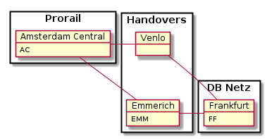
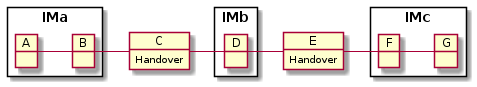

Route Domain Model¶
Overview¶
Each international train has to be split into sections when the train crosses a border. The split locations are called handover points. At each handover the responsibility for the train planning changes from IM to IM and RU to RU. The planning process is coordinated by the Train.lead_ru.
This UML class diagramm [1] shows the main concepts involved:
![class JourneyLocation <<TOM>> {
id: LocationIdentifier
}
class Train <<TOM>> {
lead_ru: CompanyCode
}
class RouteSection {
planning_im: CompanyCode
applicant_ ru: CompanyCode
}
Handover --|> JourneyLocation
Origin --|> JourneyLocation
Destination --|> JourneyLocation
RouteSection "*" -> "1" JourneyLocation : departure_station >
RouteSection "*" -> "1" JourneyLocation : arrival_station >
Train *-- "1..*" RouteSection
class PathRequest <<TOM>> {
planning_im: CompanyCode
applicant_ ru: CompanyCode
}
RouteSection o-- "0..*" PathRequest : is derived from <](_images/plantuml-1dc2d22755324fe0510a15982eb25c92f3e7d40e.png)
An international Train [2] must at least have two sections. The
following constraint must hold for each RouteSection:
Rule SEC-01 Journey Locations
- RouteSection.departure_station is a Origin or Handover
- RouteSection.arrival_station is a Handover or Destination
For each RouteSection the planning_im and applicant_ru exchange PathRequest and PathDetails to plan the detailed route within a RouteSection. This process is described in detail in the Sector Handbook of the RU/IM Telematrics JSG. As long as borders of a section both in location and time are unchanged no other participant in the planning of the whole train has to be informed.
The following paragraph describes the minimal information which all companies involved must know about the whole train. Changes to this information have to be propagated by the lead RU.
Train and RouteSection¶
The following diagramm shows the two main classes of our proposition for the TOM. It describes the minimum information needed for a valid route information of an international train:

Timestamps¶
This model completely describes a planned set of train runs. Each train run is a sequence of sections runs which have to connect properly in time at handover points. The timing attributes of a RouteSection serve this purpose:
- calendar is a set of calendar days where the train starts at RouteSection.departure_station
- departure_time is the day time the train starts each day in calendar
- departure_stop_time planned stop time at a section handover station of departure
- travel_time travel time from section station of departure to section station of arrival. This attribute is used to calculate the arrival time at station of arrival.
Only RouteSections have a calendar. This is the set of starting days at the departure_station of a section. All timestamps in Train, TrainRun and SectionRuns (see next chapter) are calculated from the timing attributes.
Because a train can have several starting RouteSections (i.e. different start locations and dates) it makes no sense to assign a calender to it. A calender must always be relativ to a fixed start location. Example: Train from Amsterdam to Frankfurt explains such a situation with an overnight train in the starting sections.
Working with only timestamps also avoids the difficulties with overnight trains. No OTR (Offset To Reference) is needed!
Identifiers¶
The method Train train_id() computes the unique trainID from core_id, lead_ru and
timetable_year.
Rule SEC-03 Unique Section ID
RouteSection.section_id must be unique within the set
of sections of a train.
The section_id is used to make the daily train IDs unique in case of overnight trains. Using the start date of a train results in duplicate train IDs. See example below.
Rule SEC-04 Unique functional key of sections
A route section of a train is uniquely identified by this quadruple:
((section.departure_station, section.departure_time), (section.arrival_station, section.arrival_time))
Therefore, if on some day in the calendar of a section the train from section station of departure AC to section station of arrival EMM should arrive at at different time at EMM, the RU has to define a new RouteSection for this day. If EMM is a handover, the lead RU must ask the applicant RU of the following section to create fitting route section with section station of departure EMM.
Versioning¶
We suggest versioning of trains and sections to support the synchronsisation of the domain model between the systems of the cooperating companies. If a company make a change of section its RouteSection.version is incremented. Same with the Train.version. The receiver of a message containing the RoutingInfo [3] can use this information to identify the change and act accordingly.
TrainRun and SectionRun¶
In this section we describe, how the daily train and section runs are computed from the routing info of a Train described in the previous section.
- A
SectionRunis derived for each day in the calendar of its RouteSection - A
TrainRunis computed from SectionRuns that fit together. Two sections s, t fit together if s.connects_to(t) == True (seeconnects_to()).
![left to right direction
class Train <<TOM>> {
lead_ru: CompanyCode
+TrainID train_id()
}
class RouteSection {
applicant_ru: CompanyCode
planning_im: CompanyCode
departure_time: TimeOfDay
calendar: Set<Date>
}
Train *-- "1..*" RouteSection
class SectionRun {
departure_time: Timestamp
+ str section_id()
+ Timestamp arrival_time()
+ Timestamp arrival_at_departure_station()
+ JourneyLocation departure_station()
+ JourneyLocation arrival_station()
+ Boolean connects_to(other: SectionRun)
}
RouteSection *- "1..*" SectionRun
note bottom of SectionRun
A section run happens on the calendar day
of its departure_time timestamp.
end note
class TrainRun {
+ TrainID train_run_id()
+ Date start_date()
}
note bottom of TrainRun
The start_date of a train run is the calendar day
of the departure_time timestamp of
its first section run.
end note
TrainRun o--> "1..* {ordered}" SectionRun
Train o- "1..365" TrainRun](_images/plantuml-e8b3482207f2804e7581eb48d55736179a2b3329.png)
SectionRun¶
For each day in day in RouteSection.calendar a section run is created. All SectionRuns of a
section differ only in the value of departure_time(), which is the only
information stored in a SectionRun. All other values shown can be computed from this timestamp and
the attributes of the section the run belongs to.
TrainRun¶
Whereas the section runs can easily computed from information in its RouteSection (mainly calendar and departure time at section station of departure), the train runs must be computed from all possible SectionRun sequences that fit together.
We use a graph algorithm to compute all train runs. The graph used is best described by the examples shown below. The central methods are:
train_run_graph()which computes a directed Graph G = (SectionRun, E), where (s,t) in E <=> s.connects_to(t).extended_train_run_graph()which adds to synthetic vertices to G, one at the beginning (START) connecting to departure stations of SectionRuns and one at the end (END) which connects to all stations of arrival of SectionRuns.train_run_iterator()which computes all TrainRuns out of all path in G from START to END.
Example: Train from Amsterdam to Frankfurt¶
Given this infrastructure:

This object diagramm shows a szenario for a train from AC to Frankfurt FF which is planned to operate in december 2021. On Fri-Sun handover is EMM. On Mon-Thu handover is Venlo.
![object "TR/1080/12AB: Train" as tr
object "AC->EMM: RouteSection" as ac_emm
object "AC->Venlo: RouteSection" as ac_venlo
object "EMM->FF: RouteSection" as emm_ff
object "Venlo->FF: RouteSection" as venlo_ff
ac_emm : departure_time = 23:50
ac_emm : travel_time = 02:10
ac_emm : calendar = [2021-12-01, 2021-12-31, Mon-Thu]
emm_ff : departure_time = 02:00
emm_ff : travel_time = 10:00
emm_ff : calendar = [2021-12-02, 2021-12-31, Tue-Fri]
ac_venlo : departure_time = 23:50
ac_venlo : travel_time = 02:05
ac_venlo : calendar = [2021-12-01, 2021-12-31, Fri-Sun]
venlo_ff : departure_time = 02:00
venlo_ff : travel_time = 10:00
venlo_ff : stop_time = 00:05
venlo_ff : calendar = [2021-12-01, 2022-01-01, Sat-Mon]
tr *-- ac_emm
tr *-- ac_venlo
tr *-- emm_ff
tr *-- venlo_ff
ac_emm ..> emm_ff : connects_to >
ac_venlo ..> venlo_ff : connects_to >
note top of ac_venlo
- First run on Fr 2021-12-01
- Arrival in Venlo on Saturday 1:55 =>
calendar of Venlo->FF must start on Saturday
(overnight)
end note
note left of venlo_ff
- Train stops at Venlo for 5 minutes
- Last SectionRun starts on Sa 2022-01-01!
end note
note as n1
Another overnight between AC -> EMM =>
must shift calendar of EMM->FF one day.
A section calendar is always relative to the start
at station of departure of the connected sections.
end note
n1 .. emm_ff
n1 .. ac_emm](_images/plantuml-37b381b9a40a7f1d1a4b1afe854e0d8ee3998969.png)
Specification with YAML¶
The following YAML-file is a machine readable specification of the route sections of a train with CoreID 12AB:
---
coreID: 12AB
lead_ru: 1080 # DB FV
version: 1
sections:
- id: 1
applicant_ru: 1084 # NS
planning_im: 0084 # Prorail
version: 1
departure_station: AC
departure_time: '23:50:00'
arrival_station: EMM
travel_time: 02:10:00
calendar:
begin: &ac-begin '2021-12-01'
end: &ac-end '2021-12-31'
mask: 'Mon Tue Wed Thu'
- id: 2
version: 1
applicant_ru: 1080 # DB FV
planning_im: 0080 # DB Netz
departure_station: EMM
departure_time: &dep_time_emm 02:00:00
arrival_station: FF
travel_time: 10:00:00
calendar:
begin: '2021-12-02' # shifted by one day relativ to AC-EMM
end: *ac-end # substituted by &ac-end
mask: 'Tue Wed Thu Fri'
- id: 3
version: 1
applicant_ru: 1084 # NS
planning_im: 0084 # Prorail
departure_station: AC
departure_time: '23:50:00'
arrival_station: Venlo
travel_time: 02:05:00
calendar:
begin: *ac-begin
end: *ac-end
mask: 'Fri Sat Sun'
- id: 4
version: 1
applicant_ru: 1080 # DB FV
planning_im: 0080 # DB Netz
departure_station: Venlo
departure_time: *dep_time_emm
arrival_station: FF
travel_time: '10:00:00'
stop_time: 00:05:00
calendar:
begin: *ac-begin
# Must include 1.1. for last section run
end: '2022-01-01'
mask: 'Sat Sun Mon'
TrainRun Graph¶
The resulting TrainRun-Graph can be calculated with
extended_train_run_graph() and looks like this:
TrainRun Graph Example Amsterdam to Frankfurt
You can download this graph as GraphML here: examples/train-TR-12AB-1.graphml.
Timetable as Excel-Sheet¶
With to_dataframe() you can create a Pandas DataFrame which you can export
to excel representing the time table of the train. See examples/train-TR-12AB-1.xlsx.
Example: Train with three IMs¶
Given this infrastructure:

This object diagramm shows a szenario for a train from A,B to F,G which is planned to operate in december 2020.
![object "TR/1080/13AB: Train" as tr
object "A->C: RouteSection" as ac
object "B->C: RouteSection" as bc
object "C->E: RouteSection" as ce
object "E->F: RouteSection" as ef
object "E->G: RouteSection" as eg
ac : departure_time = 23:30
ac : travel_time = 02:00
ac : calendar = [2020-12-01, 2020-12-31, Sat]
bc : departure_time = 00:30
bc : travel_time = 01:00
bc : calendar = [2020-12-01, 2020-12-31, Mon-Sat]
ce : departure_time = 01:30
ce : travel_time = 23:00
ce : calendar = [2020-12-01, 2020-12-31, daily]
ef : departure_time = 00:30
ef : travel_time = 04:00
ef : calendar = [2020-12-02, 2021-01-01, Wed-Mon]
eg : departure_time = 00:30
eg : travel_time = 08:00
eg : calendar = [2020-12-02, 2021-01-01, Tue]
tr --> ac : begin_section >
tr --> bc : begin_section >
ac ..> ce : connects_to >
bc ..> ce : connects_to >
ce ..> ef : connects_to >
ce ..> eg : connects_to >
note top of ac
Section starts previous day (night shift).
This train passes B at 00:30 on Sundays.
Therefore calender at start must be saturdays.
end note
note as n1
calendar validity starts 2.12.2011 because of double night shift
and last until 1.1.2021 (last section run starts ini new year)
end note
ef <.. n1
eg <.. n1](_images/plantuml-a62c9e541bd2011a77594a4084ba5f33de6dfe76.png)
Specification with YAML¶
---
coreID: 13AB
sections:
- departure_station: B
departure_time: &b-departure '00:30:00'
arrival_station: C
travel_time: '01:00:00'
calendar:
begin: &b-begin '2020-12-01'
end: &b-end '2020-12-31'
# Sundays the train starting from A passes B
mask: 'Mon Tue Wed Thu Fri Sat'
section_id: 1
- departure_station: A
departure_time: '23:30:00'
arrival_station: C
travel_time: '02:00:00'
calendar:
begin: *b-begin
end: *b-end
# Sunday in B => Saturday start in A
mask: 'Sat'
section_id: 2
- departure_station: C
departure_time: '01:30:00'
arrival_station: E
travel_time: '23:00:00'
calendar:
begin: *b-begin
end: *b-end
# no mask => daily
section_id: 3
- departure_station: E
departure_time: *b-departure
arrival_station: F
travel_time: '04:00:00'
calendar:
# 1.12. must be be excluded und 1.1. included
begin: &e-begin '2020-12-02'
end: &e-end '2021-01-01'
# Not on tuesday. On tuesdays section E-G is used.
mask: 'Wed Thu Fri Sat Sun Mon'
section_id: 4
- departure_station: E
departure_time: *b-departure
arrival_station: G
travel_time: '08:00:00'
calendar:
begin: *e-begin
end: *e-end
mask: 'Tue'
section_id: 5
TrainRun Graph¶
You can see 4 train runs starting from A, 31-4 starting from B, 4 arriving in G and 31-4 arriving in F.
You can download this graph as GraphML here: examples/train-TR-13AB-1.graphml.
Timetable as Excel-Sheet¶
Download the time table for Train-13AB here: examples/train-TR-13AB-1.xlsx.
Footnotes
| [1] | We use PlantUML as modeling tool. See explanations there. |
| [2] | Click on the link to see the python source code for the code element |
| [3] | Train and RouteSections could be transported in the TAF/TAP TrainInformation message structure. |